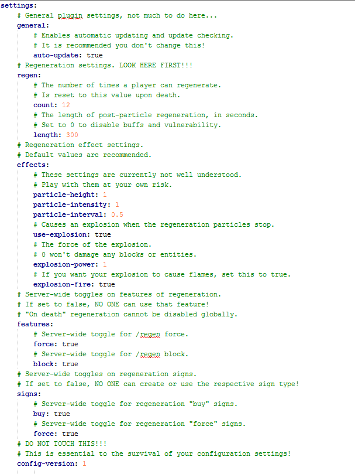

Project Rassilon
Become a Time Lord and regenerate!
Project maintained by Squawkers13 Hosted on GitHub Pages — Theme by mattgraham
Configuration
1. The config.yml
Open your server's main folder and navigate to /plugins/ProjectRassilon/. If the folder does not exist, start and stop your server.
Open the file named config.yml. It should look something like this:
In the config.yml, you configure the plugin settings. It includes comments that explain the meaning of each setting.
2. The messages.yml
Open the file named messages.yml. It should look something like this:

In the messages.yml, you set the messages the plugin displays in game. It is still a work in progress, as not all messages are supported and there is no documentation whatsoever.